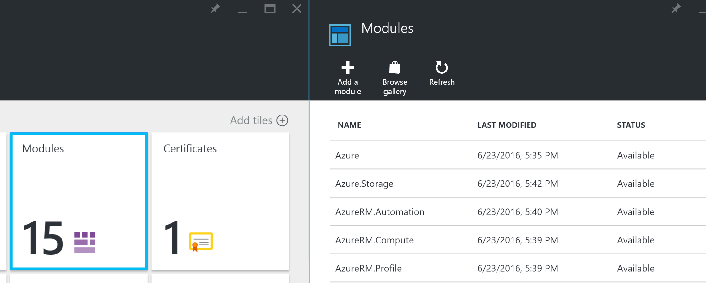
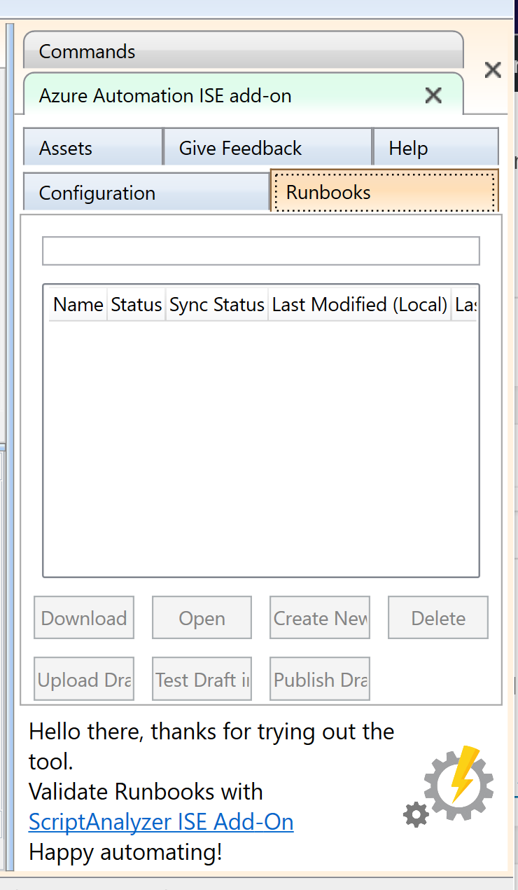

Stumbling into … Azure Automation
I’ve recently been trying to solve the challenge of working extracting files from AWS and getting them into Azure in my desired format. I wanted a solution that kept everything on the cloud and completely avoid local tin. I wanted it to have built-in auditing and error handling. I wanted something whizzy and new, to be honest! One way in which I attempted to tackle the task was with Azure Automation. In this post, I’ll overview Automation and explore how it stacked up for what I was attempting to use it for.
Overall Task: Get compressed (.tar.gz) files from AWS S3 to Azure, decompress the files, concatenate the contents and put in a different container for analytics magic
Like with most things I dropped myself into the deep-end on it so had fairly minimal knowledge of PowerShell and the Azure modules, therefore I fully expect more knowledgeable folks to wince at my stuff. General advice, “you should do it like this, then this…”‘s, and resource recommendations are all very welcome – leave a comment with them in!
Azure Automation
Azure Automation is essentially a hosted PowerShell script execution service. It seems to be aimed primarily at managing Azure resources, particularly via Desired State Configurations.
It is, however, a general PowerShell powerhouse, with scheduling capabilities and a bunch of useful features for the safe storage of credentials etc. This makes it an excellent tool if you’re looking to do something with PowerShell on a regular basis and need to interact with Azure.
Bits I used
Assets
The assets aspect of Automation I really loved. This section of functionality allows you to securely store values like API keys and credentials, and also contains schedules and modules but I’ll cover those separately.
Securely stored values can be retrieved by an Automation job and can continue being passed through the workflow in a secure fashion. This is pretty awesome!
In:
$rgname = "rg"
$automation = "posh"
if((Get-AzureAccount).Count -lt 1) {Login-AzureRmAccount}
New-AzureRmAutomationVariable –Name 'aws_accountkey' –Value 'blah' –Encrypted $false –AutomationAccountName $automation -ResourceGroupName $rgname
Out:
# Your account access key - must have read access to your S3 Bucket
$accessKey = (Get-AzureRMAutomationVariable -Name 'aws_accountkey' -ResourceGroupName $rgname -AutomationAccountName $automationaccount ).Value
Modules

To be able to work with S3 files, I needed a specific PoweShell module. You are able to add modules easily within the GUI. The nifty thing is you can import modules from the PowerShell Gallery, so I was able to use the AWSPowerShell module within my runbook.
Local dev

Uploading scripts and running them in just hoping they worked would be a poor development experience. Thankfully, there is an awesome addition to the PowerShell ISE that you can get via the PowerShell Gallery called the Azure Automation Authoring Toolkit. This enables you to make variables, make local versions of them, draft and publish runbooks. It’s a vital piece of tech for building Azure Automation runbooks.
Problems encountered
- Not a lot of Azure Automation docs use the Azure Resource Manager PoSh cmdlets, this made it tough sometimes to know what to do
- I couldn’t find a purely PowerShell solution for decompressing tar.gz files and the use of an exe like 7zip seemed difficult to achieve
Wrap up
In the end, I was only able to get the latest files from s3 and dump them into blob storage. I didn’t succeed at my goal but I was very impressed with Azure Automation and fully intend on using it in future. You can see an example of what I wrote for this task as a gist.
Thanks for reading and tips on improving the code or achieving the decompression of .tar.gz files will be gratefully received. If you haven’t used Automation yet, I recommend you give it a try.